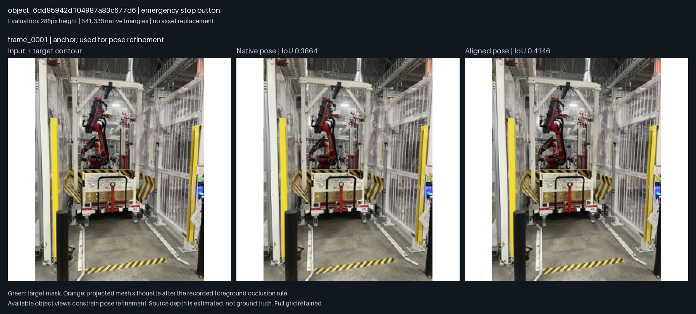
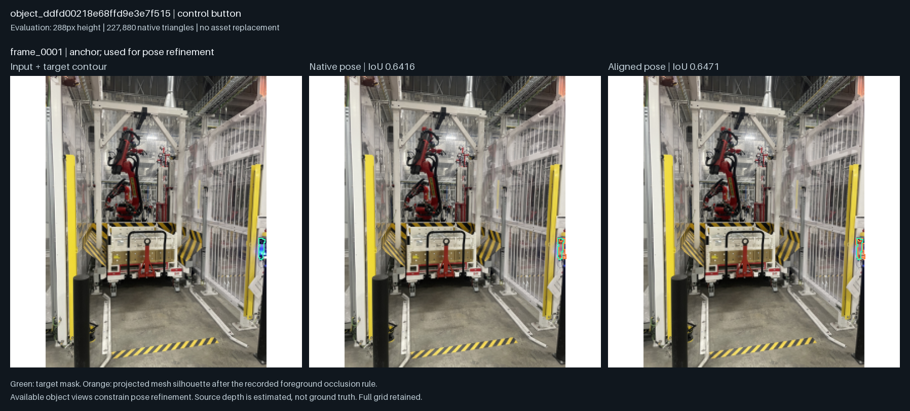

← 返回可编辑 3D同一批照片，同一物体，同一指标
Run：product-evidence-01
“前”是 RecGen 原生生成的网格和预测摆放；“后”是同一网格经过全部可用对象视图共同约束的局部摆放优化。没有替换物体或修改照片。轮廓距离除以图像高度；深度误差是与源几何估计深度比较的中位相对误差，不能解释为实测尺寸精度。
“观测表面”只包含照片可见的三角面。各对象使用的视图逐行列出，本表为输入一致性拟合，不是独立测试集指标。封闭网格仅表示几何拓扑，不证明被遮挡的形状正确。
这是 RecGen 的实际实验；没有运行未公开的 Lucida GizmoAct 策略。资产为静态可编辑网格，机器人关节和物理碰撞尚未验证。
其余 79 条候选尚未生成。逐项状态见 完整记录。
emergency stop button
541,336 三角面 · 封闭网格：否 · 完整记录

control button
227,880 三角面 · 封闭网格：是 · 完整记录

下载所有指标 · 下载 GLB